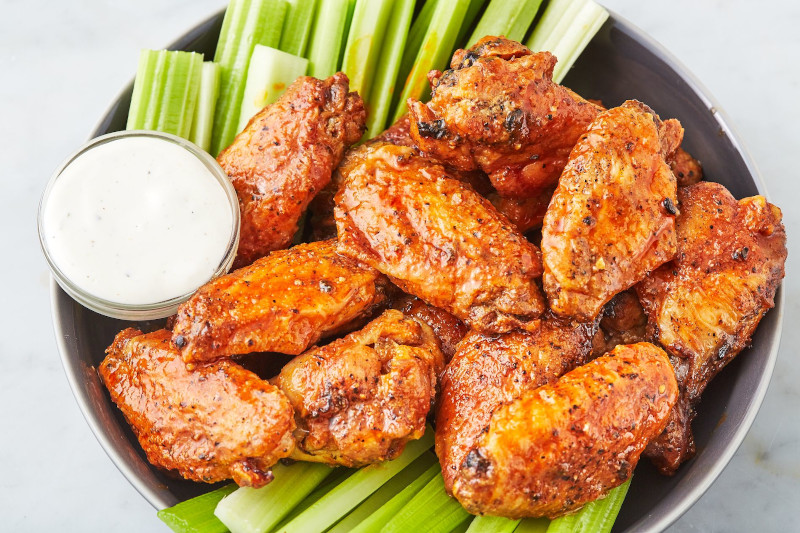

Air Fryer Chicken Wings

Description
Restaurant style chicken wings ready in 30 minutes!
Ingredients
- 2lbs fresh or thawed chicken wings
- 1/2 tsp salt
- 1 tbs chilli powder
- 1 tsp garlic powder
Steps
- In a small dish, combine spices and salt.
- Sprinkle seasonings over wings and toss until evenly covered.
-
Rub oil on the bottom of the air fryer basket, and preheat to 385F
-
Place wings evenly in the basket and cook for 24 minutes, flippling
every 10 minutes.
-
After the 24 minutes is done, turn air fryer up to 400F and cook for 6
more minutes.
- Remove the wings from the air fryer, and enjoy!
Back to top
Click for more recipies